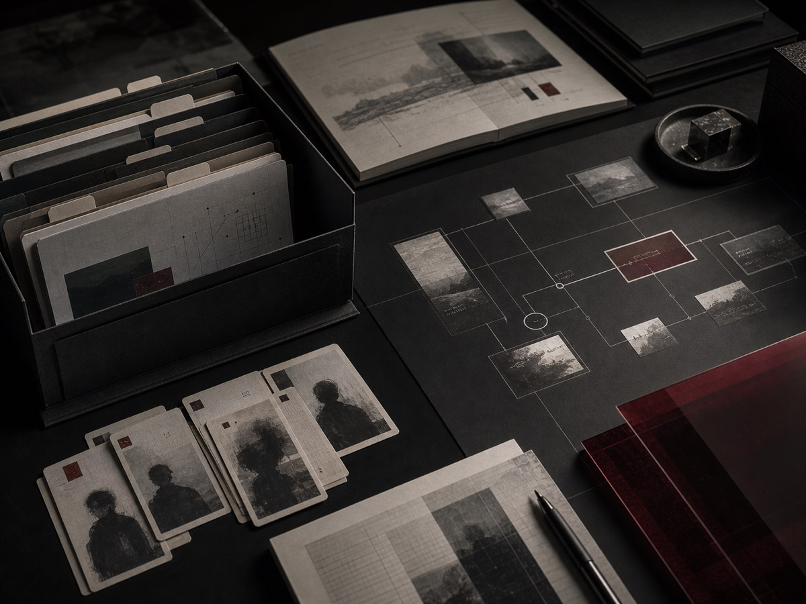

重点案例 / AI 与 Agent
云梦世界
Infinite Story
AI 驱动的角色与剧情游玩平台，包含世界观、多 Agent、记忆和社区体验。

- 问题
- 小说、角色、世界和素材卡在静态文本里只能被阅读，读者无法真正进入世界游玩。
- 做法
- 把叙事结构做成系统：离线世界构建、运行时初始化、OSAgent 玩家主链、NPC 路由、角色长期记忆、社区素材和 Web 内测平台。
- 交付
- 已有 Web 内测平台与代码仓库，公开入口当前不可达，暂不提供外链。
- 世界构建
- 运行时初始化
- 玩家主链
- NPC 路由
- 长期记忆
- 社区素材